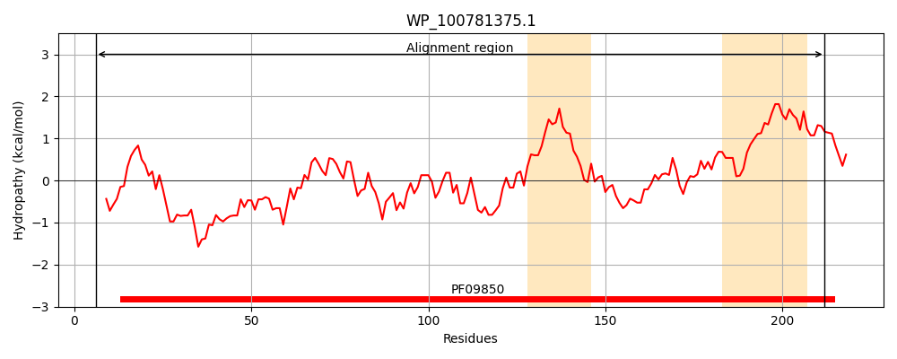
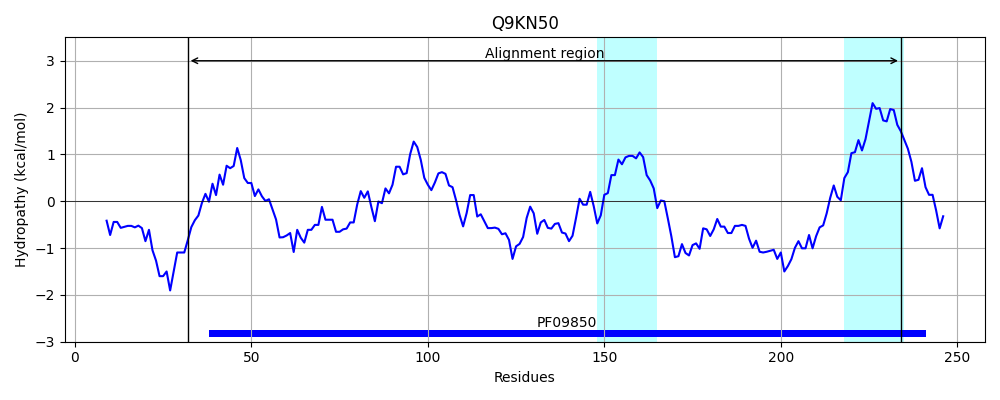
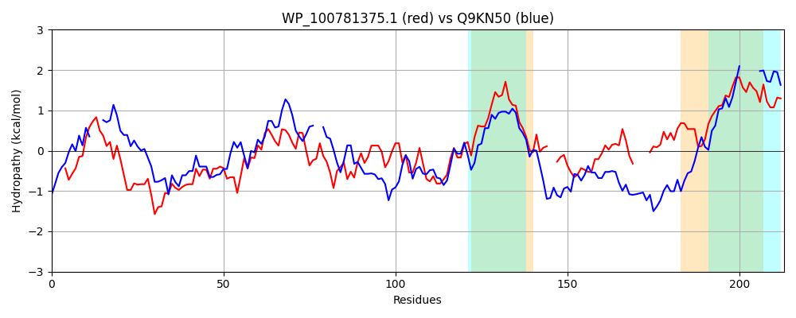

Hit Accession: Q9KN50
Hit TCID: 3.A.23.1.1
Hit Description: gnl|BL_ORD_ID|18379 gnl|TC-DB|Q9KN50|3.A.23.1.1 Hypothetical protein VCA0115 - Vibrio cholerae.
Mach Len: 213
e:0.000028
Query TMS Count : 2
Hit TMS Count: 2
TMS-Overlap Score: 1.400000
Predicted Substrates:CHEBI:8526;protein polypeptide chain, CHEBI:4291;deoxyribonucleic acid
BLAST Alignment:
Score: 101 , Bit scores: 43 bits, E-value: 2.8e-05, Alignment length: 213, Percentage identity: 24
Query: 6 RGNAASIDIDALLQNTWLQVISLRHGPQFRDEEGYTLWQRCVADVERVQHELKASGLDDASCQHILTAQCALLDEAVKGRGVEDEACLQWYDIPLQGHFLGTMDAGDTLCDRMRDVLREPAPDLAVVTCFQRVMLLGFVGSFRSL--NDPERLKLINALSEHVPPFQCPS----TAPVLVENRAGLGISGWLASWPVRIGLSVMVVLVLWWGL 212
RG+ ++ IDA T L +SLR + ++++ + +++ ++ EL G + A CA LDE+V G E A W + + F G+ + + + EP A++ ++LGF G +R + ER K+I+ L + + + T P RA +S + W V G +VLW GL
Sbjct: 32 RGDNPNVLIDAA---TPLFGLSLRVRTLTECDNIEQIYRQTIEEIKAIEIELTEQGYEHAILMAYRYILCAFLDESV--MGTEWGASSLWAEHSMLSRFHNETWGGEKVFTILSRLEGEPHRYQALLAFIYHCLILGFEGKYRVMEGGQAEREKVISRLHQLLSSLEESEPQDLTRPTDHVVRAKYTLSRQMPVWSVFAGF-----IVLWVGL 234 | Protein Hydropathy Plots: |
|---|
|  |  |
Pairwise Alignment-Hydropathy Plot:
|
|---|
|  |